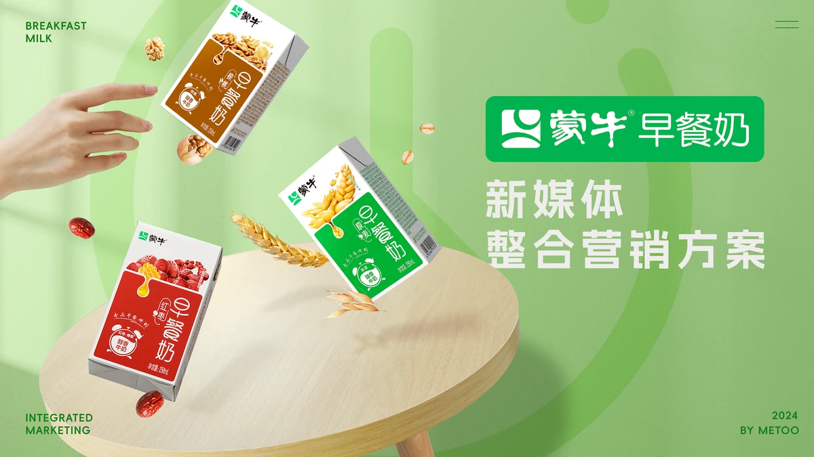
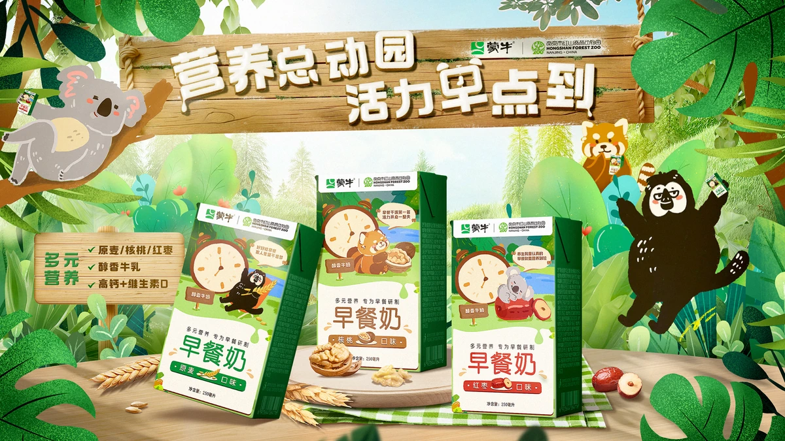
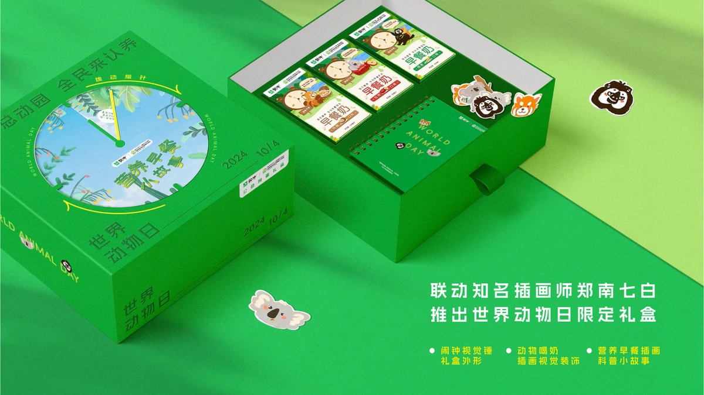
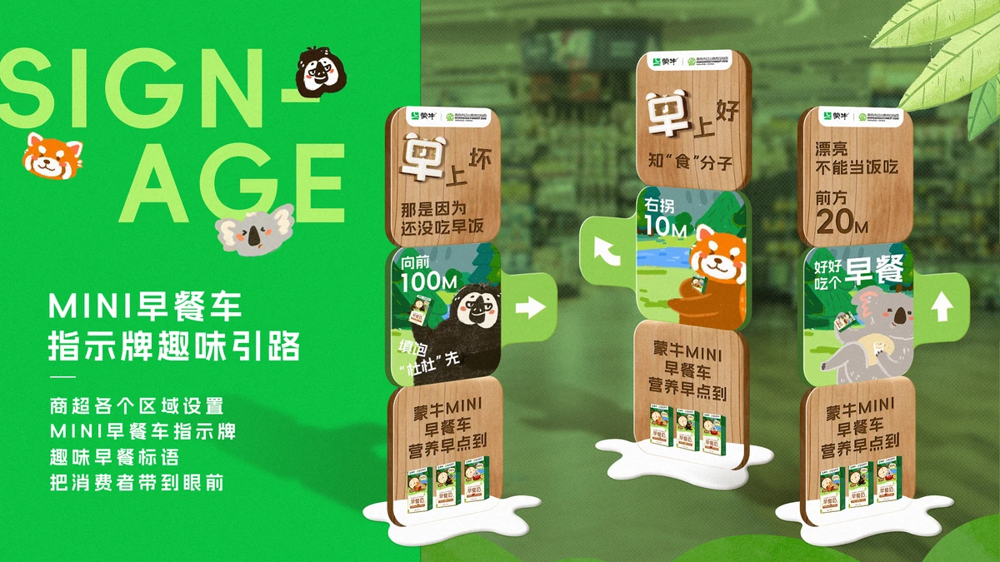
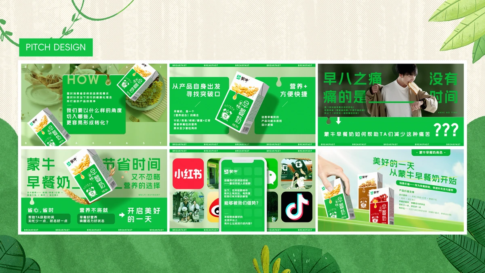

蒙牛早餐奶 × 红山森林动物园新媒体整合营销

- Brand
- 蒙牛（蒙牛早餐奶）
- Project
- 蒙牛早餐奶 × 红山森林动物园 新媒体整合营销
- Role
- 视觉定调、联名包装与活动视觉、提案内容制作
- Status
- PITCH DESIGN
项目概览
项目背景
蒙牛早餐奶希望重新进入年轻消费者的早餐场景。方案结合“早八”生活状态与红山森林动物园的 IP 热度，提出“营养总动园，活力早点到”，并把联名包装、公益认养和线下早餐车串成一条传播链路。
主要交付物
联名产品包装焕新（结合红山顶流动物形象）、线下 O2O 事件营销（办公园区动物早餐车空降、商超 Mini 早餐车）、双十一“全民来认养”公益互动 H5、联名限定礼盒及线下 Zoo Walk 集章打卡活动。



